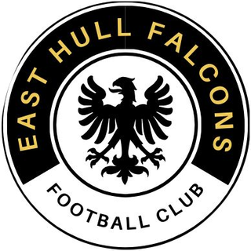
Every fixture is two 30-minute games. Postponed matches are added back with their new date once rearranged. Our home pitch is at Alderman Cogan Primary School, kick-off 10:30. Scores show East Hull Falcons first. Tap a postcode to open the venue in Google Maps.
Sessions are confirmed in the team WhatsApp group. If your child can't make one, please let a coach know.
We're based at Alderman Cogan Primary School, Whitworth Street, Hull, HU9 3HJ. The club is an England Football Accredited club, which means we meet the standards The FA sets for a safe, welcoming environment, with qualified volunteers and the right policies in place.
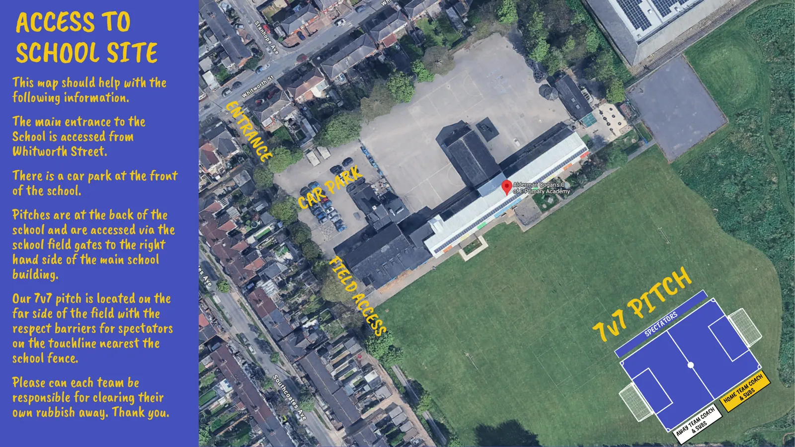
We ask everyone watching to:
Each of our teams has a qualified first aider, who will introduce themselves to the visiting team before kick-off and takes charge of any serious incident. Visiting teams should bring their own first aider for minor injuries.
The playbook explains who we are, how we coach and develop the children, how we play on a matchday, and how you can help as a parent or guardian.
We want confident footballers who can use both feet, are brave on the ball and try to keep it, whatever the pressure. We always encourage players to try, with the freedom to make mistakes: we are looking at long-term development, not the finished article right now.
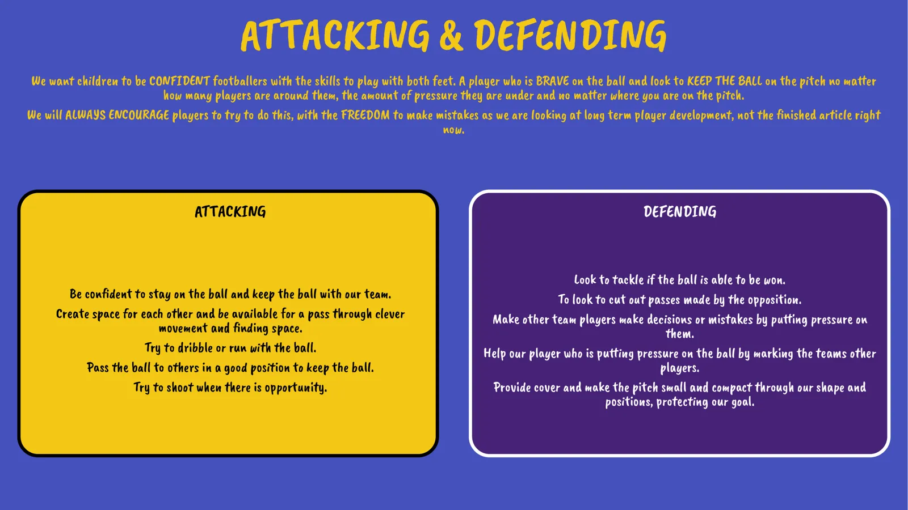
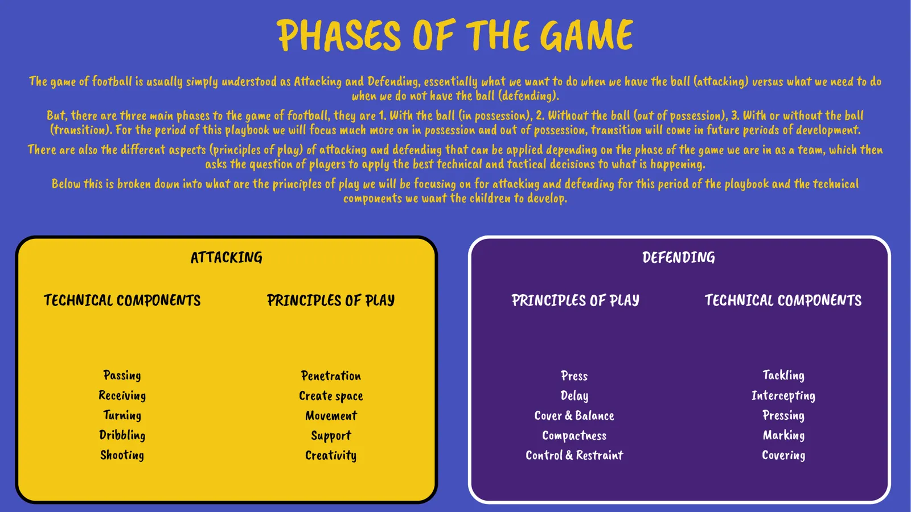
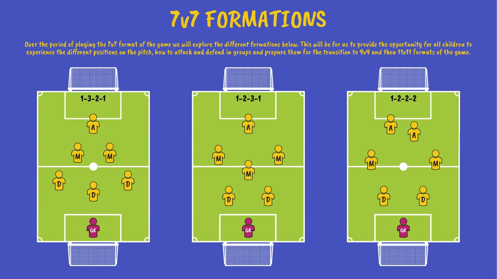
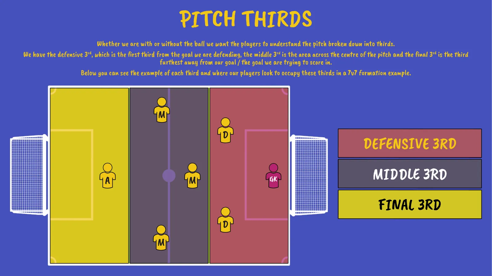
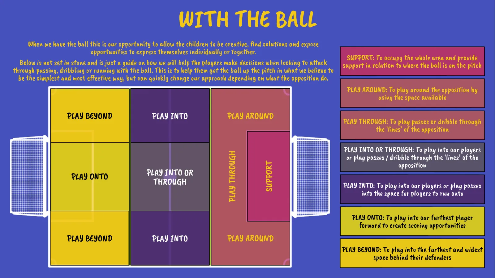
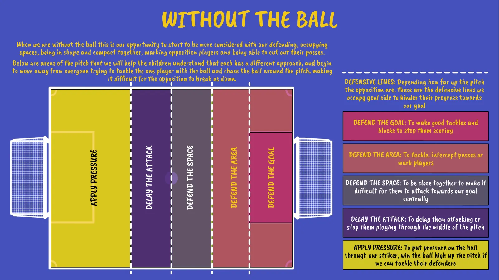
Our coaching principles: 90% of everything we do involves a football; we replicate the match pitch in training; and everything we do connects back to the game and matchday. Sessions balance constant, variable and random practice depending on the focus and the children's current level.
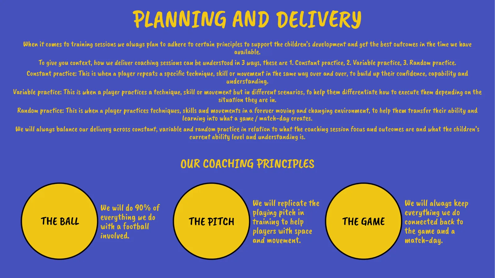
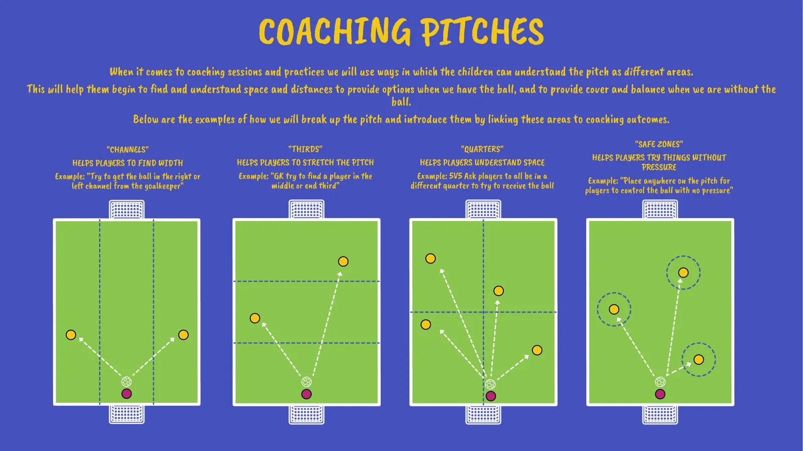
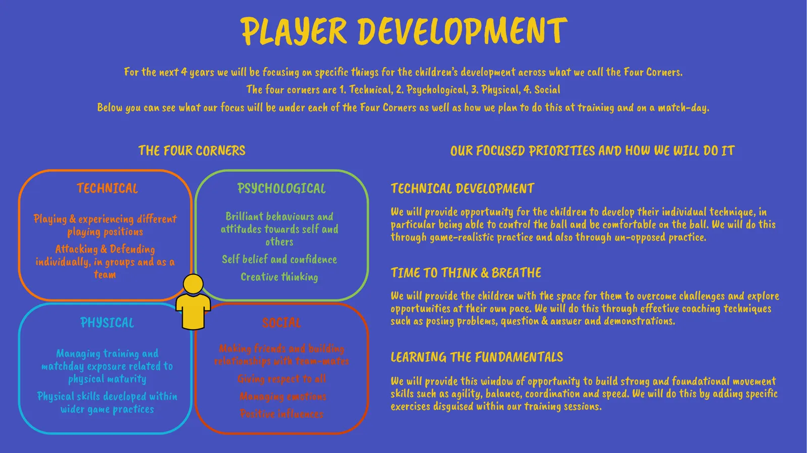
Each season the number of players, the pitch, the goals and sometimes the ball get bigger. We pride ourselves on equal game time. If your child doesn't feel like playing, or something is affecting them, please talk to us: their health and wellbeing comes first.
| U10s | Format | Pitch | Goal | Ball |
|---|---|---|---|---|
| 2025/26 | 7v7 | 60×40 yd | 12×6 ft | Size 3 |
| 2026/27 | 7v7 | 60×40 yd | 12×6 ft | Size 3 |
| 2027/28 | 9v9 | 80×50 yd | 16×7 ft | Size 4 |
| 2028/29 | 9v9 | 80×50 yd | 16×7 ft | Size 4 |
| 2029/30 | 11v11 | 100×60 yd | 21×6 ft | Size 4 |
These are the messages we share with the children in each position. Please help them understand these at home too.
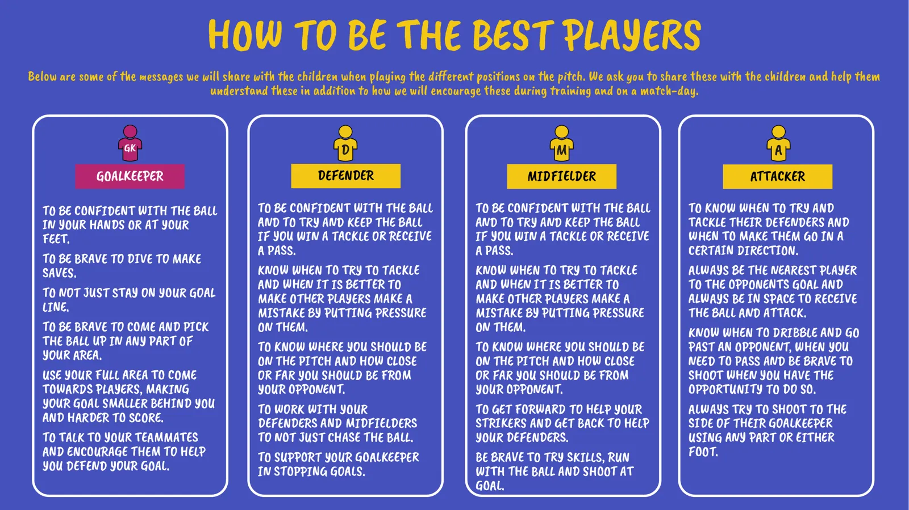
No offsides at U10. All free kicks are direct except for a deliberate header. Retreat line: the team without the ball drops into its own half for a goal kick. Power play: a team losing by four goals can add an extra player.
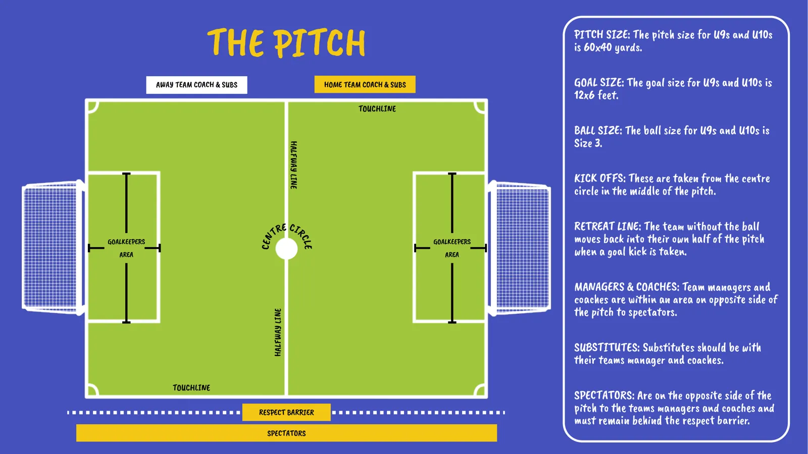
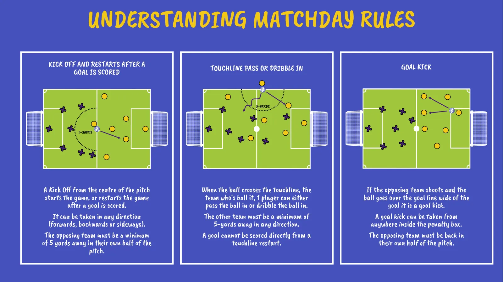
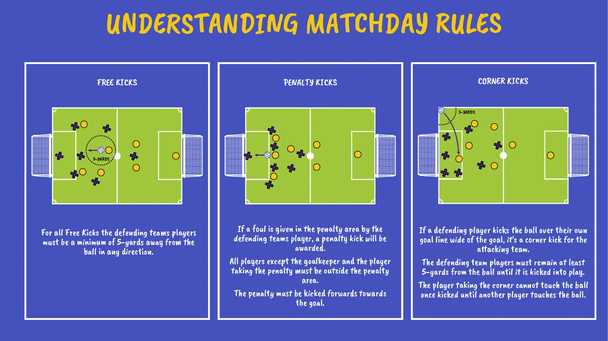
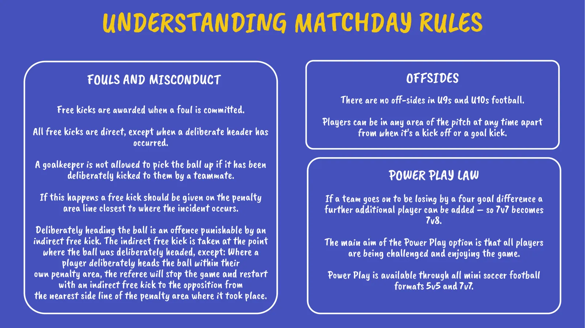
East Hull Falcons is run entirely by volunteers. Sponsors and donations pay for the kit, facilities and training that keep football safe, fun and accessible for our children.
Scan the code or use our GoFundMe page to help keep the club running and meeting the standards we're held to.
For businesses and organisations, we're keen to build lasting partnerships where our values align. You could sponsor one item, a whole area, or a mix:
To talk about sponsorship, contact Tom Lee: